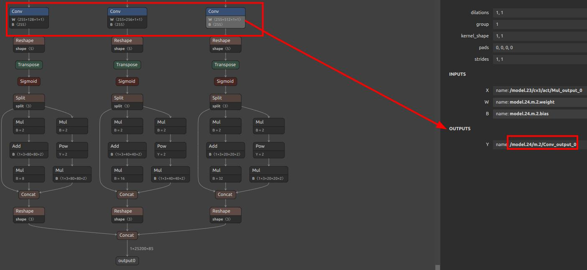
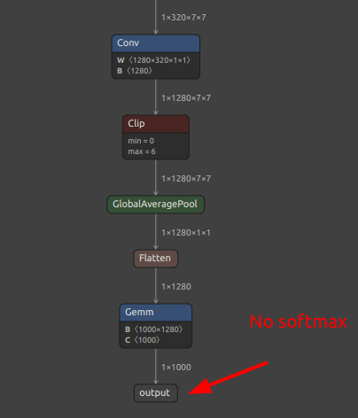

English
EnglishConvert ONNX Model to a Format Usable by MaixCAM / MaixPy (MUD)
For MaixCAM2 model conversion, please refer to the MaixCAM2 Model Conversion Documentation.
Introduction
Models trained on a computer cannot be directly used by MaixCAM due to its limited hardware performance. Generally, we need to perform INT8 quantization to reduce computation and convert the model into a format supported by MaixCAM.
This article explains how to convert an ONNX model into a format that MaixCAM can use (MUD model).
Model File Formats Supported by MaixCAM
MUD (Model Universal Description file) is a model description file supported by MaixPy, used to unify model files across different platforms, making MaixPy code cross-platform compatible. It is essentially a text file in ini format and can be edited with a text editor.
Typically, a MUD file is accompanied by one or more actual model files. For MaixCAM, the actual model file is in .cvimodel format, with the MUD file providing some descriptive information.
For example, a YOLOv8 model consists of two files: yolov8n.mud and yolov8n.cvimodel. The former contains:
[basic]
type = cvimodel
model = yolov8n.cvimodel
[extra]
model_type = yolov8
input_type = rgb
mean = 0, 0, 0
scale = 0.00392156862745098, 0.00392156862745098, 0.00392156862745098
labels = person, bicycle, car, motorcycle, airplane, bus, train, truck, boat, traffic light, fire hydrant, stop sign, parking meter, bench, bird, cat, dog, horse, sheep, cow, elephant, bear, zebra, giraffe, backpack, umbrella, handbag, tie, suitcase, frisbee, skis, snowboard, sports ball, kite, baseball bat, baseball glove, skateboard, surfboard, tennis racket, bottle, wine glass, cup, fork, knife, spoon, bowl, banana, apple, sandwich, orange, broccoli, carrot, hot dog, pizza, donut, cake, chair, couch, potted plant, bed, dining table, toilet, tv, laptop, mouse, remote, keyboard, cell phone, microwave, oven, toaster, sink, refrigerator, book, clock, vase, scissors, teddy bear, hair dryer, toothbrush
This file specifies the model type as cvimodel and the model path relative to the MUD file as yolov8n.cvimodel. It also includes information such as preprocessing mean and scale (which should match the preprocessing method used during training), and labels representing the 80 categories for object detection.
When using this model, place both files in the same directory.
Preparing the ONNX Model
Prepare your ONNX model and view it on https://netron.app/ to ensure that the operators used in your model are supported by the conversion tool. The list of supported operators can be found in the CVITEK_TPU_SDK Developer Guide.pdf available from Sophgo's TPU SDK.
Identify Appropriate Quantization Output Nodes
Models usually have post-processing nodes that are handled by the CPU. We need to strip these out as they can affect quantization quality and potentially cause quantization to fail.
For example, in YOLOv5:

There are three conv layers, with subsequent calculations handled by the CPU. For quantization, use the outputs of these conv layers as the final outputs of the model. The output names in this case are /model.24/m.0/Conv_output_0,/model.24/m.1/Conv_output_0,/model.24/m.2/Conv_output_0.
YOLO11/YOLOv8: Please refer to Offline Training YOLO11/YOLOv8.
For classification models, it is generally sufficient to take the name of the last output layer. However, if there is a softmax layer, it is recommended not to include softmax in the model. Instead, take the output of the layer before softmax. In the diagram below, there is no softmax layer, so the final layer can be used directly.

Setting Up the Model Conversion Environment
The model conversion uses Sophgo's https://github.com/sophgo/tpu-mlir. We will install it in a Docker environment to avoid compatibility issues with the host machine.
Install Docker
Follow the official Docker installation documentation.
For example:
# Install dependencies for Docker
sudo apt-get update
sudo apt-get install apt-transport-https ca-certificates curl gnupg-agent software-properties-common
# Add the official Docker source
curl -fsSL https://download.docker.com/linux/ubuntu/gpg | sudo apt-key add -
sudo add-apt-repository "deb [arch=amd64] https://download.docker.com/linux/ubuntu $(lsb_release -cs) stable"
# Install Docker
sudo apt-get update
sudo apt-get install docker-ce docker-ce-cli containerd.io
Pull the Docker Image
docker pull sophgo/tpuc_dev:latest
If pulling from within China, you may experience slow speeds. Consider setting up a local mirror. You can search for instructions or refer to Docker Proxy and Mirror Setup.
Run the Container
docker run --privileged --name tpu-env -v /home/$USER/data:/home/$USER/data -it sophgo/tpuc_dev
This command starts a container named tpu-env, mounting the ~/data directory from the host to the container's ~/data, enabling file sharing and path consistency.
To start the container next time, use docker start tpu-env && docker attach tpu-env.
Install tpu-mlir
Download the whl file from GitHub and place it in the ~/data directory. Install it in the container:
pip install tpu_mlir*.whl # Replace with the downloaded file name
Type model_transform.py end with Enter key in container should display help information, indicating a successful installation.
Writing the Conversion Script
The conversion mainly involves two commands: model_transform.py and model_deploy.py. To simplify the process, create a script convert_yolov5_to_cvimodel.sh:
#!/bin/bash
set -e
net_name=yolov5s
input_w=640
input_h=640
# mean: 0, 0, 0
# std: 255, 255, 255
# mean
# 1/std
# mean: 0, 0, 0
# scale: 0.00392156862745098, 0.00392156862745098, 0.00392156862745098
mkdir -p workspace
cd workspace
# convert to mlir
model_transform.py \
--model_name ${net_name} \
--model_def ../${net_name}.onnx \
--input_shapes [[1,3,${input_h},${input_w}]] \
--mean "0,0,0" \
--scale "0.00392156862745098,0.00392156862745098,0.00392156862745098" \
--keep_aspect_ratio \
--pixel_format rgb \
--channel_format nchw \
--output_names "/model.24/m.0/Conv_output_0,/model.24/m.1/Conv_output_0,/model.24/m.2/Conv_output_0" \
--test_input ../dog.jpg \
--test_result ${net_name}_top_outputs.npz \
--tolerance 0.99,0.99 \
--mlir ${net_name}.mlir
# export bf16 model
# not use --quant_input, use float32 for easy coding
model_deploy.py \
--mlir ${net_name}.mlir \
--quantize BF16 \
--processor cv181x \
--test_input ${net_name}_in_f32.npz \
--test_reference ${net_name}_top_outputs.npz \
--model ${net_name}_bf16.cvimodel
echo "calibrate for int8 model"
# export int8 model
run_calibration.py ${net_name}.mlir \
--dataset ../images \
--input_num 200 \
-o ${net_name}_cali_table
echo "convert to int8 model"
# export int8 model
# add --quant_input, use int8 for faster processing in maix.nn.NN.forward_image
model_deploy.py \
--mlir ${net_name}.mlir \
--quantize INT8 \
--quant_input \
--calibration_table ${net_name}_cali_table \
--processor cv181x \
--test_input ${net_name}_in_f32.npz \
--test_reference ${net_name}_top_outputs.npz \
--tolerance 0.9,0.6 \
--model ${net_name}_int8.cvimodel
Key parameters include:
output_names: Names of the output nodes we identified earlier.mean, scale: Preprocessing methods used during training. For instance,YOLOv5preprocesses the image by subtractingmeanand dividing bystd. In this example,meanis0andstdis255, meaning the scale is1/std. Modify these according to your model's preprocessing method.test_input: The image used for testing during conversion. In this script, it's../dog.jpg, so ensure this image is placed in the same directory as the script. Replace it according to your model.tolerance: Allowed
error margin before and after quantization. If errors during conversion indicate values lower than this threshold, it means the converted model might have significant deviation from the ONNX model. If acceptable, you can lower this threshold. Often, this requires optimizing the model and carefully examining post-processing.
quantize: The data type for quantization. Generally,INT8models are used on MaixCAM. Although a BF16 model is also converted here, INT8 is preferred for speed, while BF16 can be considered if INT8 conversion is not feasible or if precision is critical.dataset: The dataset used for quantization. ForYOLOv5, it's a folder of images. Copy a subset of typical images from the coco dataset. Use--input_numto specify the number of images used (should be ≤ the actual number in the images directory).
Running the Conversion Script
Run the script with:
chmod +x convert_yolov5_to_cvimodelsh && ./convert_yolov5_to_cvimodel.sh
Wait for the conversion to complete.
If errors occur, carefully review the previous explanations for potential issues with parameters or output layers.
Upon successful conversion, the workspace folder will contain a **_int8.cvimodel file.
Writing the MUD File
Modify the MUD file according to your model. For YOLOv5, the MUD file looks like this. Change labels to match your trained model:
[basic]
type = cvimodel
model = yolov5s.cvimodel
[extra]
model_type = yolov5
input_type = rgb
mean = 0, 0, 0
scale = 0.00392156862745098, 0.00392156862745098, 0.00392156862745098
anchors = 10,13, 16,30, 33,23, 30,61, 62,45, 59,119, 116,90, 156,198, 373,326
labels = person, bicycle, car, motorcycle, airplane, bus, train, truck, boat, traffic light, fire hydrant, stop sign, parking meter, bench, bird, cat, dog, horse, sheep, cow, elephant, bear, zebra, giraffe, backpack, umbrella, handbag, tie, suitcase, frisbee, skis, snowboard, sports ball, kite, baseball bat, baseball glove, skateboard, surfboard, tennis racket, bottle, wine glass, cup, fork, knife, spoon, bowl, banana, apple, sandwich, orange, broccoli, carrot, hot dog, pizza, donut, cake, chair, couch, potted plant, bed, dining table, toilet, tv, laptop, mouse, remote, keyboard, cell phone, microwave, oven, toaster, sink, refrigerator, book, clock, vase, scissors, teddy bear, hair dryer, toothbrush
The basic section specifies the model file type and path, necessary for loading and running the model using the maix.nn.NN class in MaixPy or MaixCDK.
The extra section varies based on the model. It includes parameters such as preprocessing, post-processing, and labels. For YOLOv5, you can download its model, copy, and modify it.
If you need to support a new model not currently supported by MaixPy, define the extra parameters based on the model's preprocessing and post-processing requirements, then write the corresponding decoding class. If you prefer not to modify the MaixPy C++ source code, you can use the maix.nn.NN class to load the model and handle post-processing in Python, though this is less efficient.
Writing Post-processing Code
If you modify the mud file based on supported models, you can directly use the corresponding code in MaixPy or MaixCDK. If you need to support new models, design the mud file and write the preprocessing and post-processing code:
- Option 1: Use
maix.nn.NNinMaixPyto load the model, then use theforwardorforward_imagefunction to run the model and process the output with Python functions. - Option 2: In
MaixCDK, refer to YOLOv5 source code, add a newhppfile, and create a class to process your model. Modify all functions and class@maixpyannotations, compile theMaixPyproject, and call the new class to run the model inMaixPy.
You can submit the source code (Pull Request) to the main MaixPy repository to contribute to the community and share new models on MaixHub for rewards ranging from 30 to 2000 yuan based on quality!